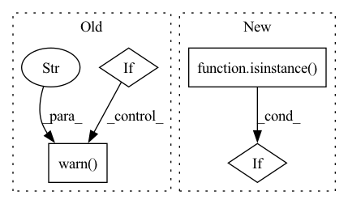

Pattern ID :5648

Before Change
y[..., 2:4] = (y[..., 2:4] * 2) ** 2 * self.anchor_grid[i] // wh
z.append(y.view(bs, -1, self.no))
if torch.jit.is_scripting():
warnings.warn("YOLO always returns a (outputs, features) tuple in scripting")
return (torch.cat(z, 1), x)
else:
return self.eager_outputs(torch.cat(z, 1), x)
After Change
x[i] = x[i].view(bs, self.na, self.no, ny, nx).permute(0, 1, 3, 4, 2).contiguous()
if not self.training: // inference
if not isinstance(self.stride, Tensor):
self.stride = torch.tensor(self.stride, device=device)
if self.grid[i].shape[2:4] != x[i].shape[2:4]:
In pattern: SUPERPATTERN
Frequency: 3
Non-data size: 4
Instances
Fragment ID: 19862575
Project Name: zhiqwang/yolov5-rt-stack
Commit Name: 6351078c9c31b3bc74c9c550a35bed355d8ef79f
Time: 2020-10-05
Author: zhiqwang@outlook.com
File Name: models/yolo.py
M Class Name: Detect
N Class Name: Detect
M Method Name: forward(2)
N Method Name: forward(2)
M Parent Class: nn.Module
N Parent Class: nn.Module
M File Name: models/yolo.py
N File Name: models/yolo.py
M Start Line: 54
M End Line: 75
N Start Line: 52
N End Line: 71
'>
Before Change
node_processed: bool = False
for node in graph.nodes:
node_processed = False
if node.op == "call_function" and node.target == torch.einsum:
// Get shapes:
try:
shapes = [a.shape for a in node.args[1:]]
except AttributeError:
warnings.warn(
f"einsum {repr(node)} lacked shape information; "
"not optimizing. "
"Did you forget to run ShapeProp on this graph?",
RuntimeWarning
)
else:
// We have shapes, so:
// Determine the optimal contraction
path, path_info = opt_einsum.contract_path(
After Change
) -> torch.nn.Module:
if isinstance(model, fx.GraphModule):
graph: fx.Graph = model.graph
else:
tracer: fx.Tracer = tracer_class()
'>
Fragment ID: 19862574
Project Name: linux-cpp-lisp/opt_einsum_fx
Commit Name: 1f0a34a7fbb639d1fbb2d09cb33fe49effef90e9
Time: 2021-03-07
Author: 1473644+Linux-cpp-lisp@users.noreply.github.com
File Name: opt_einsum_fx/_opt_ein.py
M Class Name: AnonimousClass
N Class Name: AnonimousClass
M Method Name: optimize_einsums(3)
N Method Name: optimize_einsums(1)
M Parent Class:
N Parent Class:
M File Name: opt_einsum_fx/_opt_ein.py
N File Name: opt_einsum_fx/_opt_ein.py
M Start Line: 12
M End Line: 70
N Start Line: 13
N End Line: 31
'>
Before Change
// see https://github.com/hill-a/stable-baselines/issues/863
self.remove_time_limit_termination = remove_time_limit_termination
if train_freq > 0 and n_episodes_rollout > 0:
warnings.warn(
"You passed a positive value for `train_freq` and `n_episodes_rollout`."
"Please make sure this is intended. "
"The agent will collect data by stepping in the environment "
"until both conditions are true: "
"`number of steps in the env` >= `train_freq` and "
"`number of episodes` > `n_episodes_rollout`"
)
self.actor = None // type: Optional[th.nn.Module]
self.replay_buffer = None // type: Optional[ReplayBuffer]
// Update policy keyword arguments
After Change
// see https://github.com/hill-a/stable-baselines/issues/863
self.remove_time_limit_termination = remove_time_limit_termination
if isinstance(train_freq, int):
train_freq = (train_freq, "step")
try:
'>
Fragment ID: 19862573
Project Name: dlr-rm/stable-baselines3
Commit Name: 0c50d75ecb6287132c9de4d7070e50905c5f632d
Time: 2021-02-27
Author: maximilian@ernestus.de
File Name: stable_baselines3/common/off_policy_algorithm.py
M Class Name: OffPolicyAlgorithm
N Class Name: OffPolicyAlgorithm
M Method Name: __init__(28)
N Method Name: __init__(29)
M Parent Class: BaseAlgorithm
N Parent Class: BaseAlgorithm
M File Name: stable_baselines3/common/off_policy_algorithm.py
N File Name: stable_baselines3/common/off_policy_algorithm.py
M Start Line: 86
M End Line: 149
N Start Line: 84
N End Line: 142